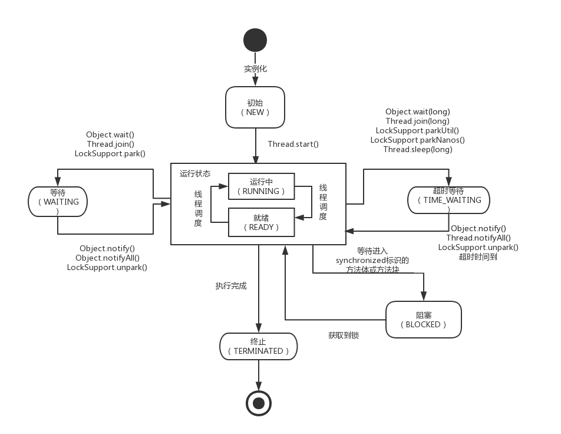

总结了 Java 多线程相关的面试题。
1. Object 的 wait()和notify() 方法
下图为线程状态的图：

Object 对象中的 wait()和notify()是用来实现实现等待 / 通知模式。其中等待状态和阻塞状态是不同的。等待状态的线程可以通过notify() 方法唤醒并继续执行，而阻塞状态的线程则是等待获取新的锁。
调用 wait()方法后，当前线程会进入等待状态，直到其他线程调用notify()或notifyAll() 来唤醒。
调用 notify() 方法后，可以唤醒正在等待的单一线程。
2. 并发特性 - 原子性、有序性、可见性
原子性：即一个操作或者多个操作 要么全部执行并且执行的过程不会被任何因素打断，要么就都不执行。
可见性：指当多个线程访问同一个变量时，一个线程修改了这个变量的值，其他线程能够立即看得到修改的值。
有序性：即程序执行的顺序按照代码的先后顺序执行，不进行指令重排列。
3. synchronized 实现原理？
synchronized 可以保证方法或者代码块在运行时，同一时刻只有一个进程可以访问，同时它还可以保证共享变量的内存可见性。
Java 中每一个对象都可以作为锁，这是 synchronized 实现同步的基础：
- 普通同步方法，锁是当前实例对象
- 静态同步方法，锁是当前类的 class 对象
- 同步方法块，锁是括号里面的对象
- 同步代码块：
monitorenter指令插入到同步代码块的开始位置，monitorexit指令插入到同步代码块的结束位置，JVM 需要保证每一个monitorenter都有一个monitorexit与之相对应。任何对象都有一个 Monitor 与之相关联，当且一个 Monitor 被持有之后，他将处于锁定状态。线程执行到monitorenter指令时，将会尝试获取对象所对应的 Monitor 所有权，即尝试获取对象的锁。 - 同步方法：
synchronized方法则会被翻译成普通的方法调用和返回指令如：invokevirtual、areturn指令，在 VM 字节码层面并没有任何特别的指令来实现被synchronized修饰的方法，而是在 Class 文件的方法表中将该方法的access_flags字段中的synchronized标志位置设置为 1，表示该方法是同步方法，并使用调用该方法的对象或该方法所属的 Class 在 JVM 的内部对象表示 Klass 作为锁对象。synchronized是重量级锁，在 JDK1.6 中进行优化，如自旋锁、适应性自旋锁、锁消除、锁粗化、偏向锁、轻量级锁等技术来减少锁操作的开销。
- 同步代码块：
4. volatile 的实现原理？
volatile 是轻量级的锁，它不会引起线程上下文的切换和调度。
volatile可见性：对一个volatile的读，总可以看到对这个变量最终的写。volatile原子性：volatile对单个读 / 写具有原子性（32 位 Long、Double），但是复合操作除外，例如i++。- JVM 底层采用“内存屏障”来实现
volatile语义，防止指令重排序。volatile经常用于两个两个场景：状态标记变量、Double Check 。
5. Java 内存模型（JMM）
JMM 规定了线程的工作内存和主内存的交互关系，以及线程之间的可见性和程序的执行顺序。
- 一方面，要为程序员提供足够强的内存可见性保证。
- 另一方面，对编译器和处理器的限制要尽可能地放松。JMM 对程序员屏蔽了 CPU 以及 OS 内存的使用问题，能够使程序在不同的 CPU 和 OS 内存上都能够达到预期的效果。
Java 采用内存共享的模式来实现线程之间的通信。编译器和处理器可以对程序进行重排序优化处理，但是需要遵守一些规则，不能随意重排序。
在并发编程模式中，势必会遇到上面三个概念： - 原子性：一个操作或者多个操作要么全部执行要么全部不执行。
- 可见性：当多个线程同时访问一个共享变量时，如果其中某个线程更改了该共享变量，其他线程应该可以立刻看到这个改变。
- 有序性：程序的执行要按照代码的先后顺序执行。
通过volatile、synchronized、final、concurrent包等 实现。
6. 有关队列 AQS 队列同步器
AQS 是构建锁或者其他同步组件的基础框架（如 ReentrantLock、ReentrantReadWriteLock、Semaphore 等）, 包含了实现同步器的细节（获取同步状态、FIFO 同步队列）。AQS 的主要使用方式是继承，子类通过继承同步器，并实现它的抽象方法来管理同步状态。
- 维护一个同步状态
state。当state 0时，表示已经获取了锁；当state = 0时，表示释放了锁。 - AQS 通过内置的 FIFO 同步队列来完成资源获取线程的排队工作：
- 如果当前线程获取同步状态失败（锁）时，AQS 则会将当前线程以及等待状态等信息构造成一个节点（Node）并将其加入同步队列，同时会阻塞当前线程
- 当同步状态释放时，则会把节点中的线程唤醒，使其再次尝试获取同步状态。
AQS 内部维护的是 CLH 双向同步队列
7. 锁的特性
- 可重入锁：指的是在一个线程中可以多次获取同一把锁。 ReentrantLock 和 synchronized 都是可重入锁。
- 可中断锁：顾名思义，就是可以相应中断的锁。synchronized 就不是可中断锁，而 Lock 是可中断锁。
- 公平锁：即尽量以请求锁的顺序来获取锁。synchronized 是非公平锁，ReentrantLock 和 ReentrantReadWriteLock，它默认情况下是非公平锁，但是可以设置为公平锁。
8. ReentrantLock 锁
ReentrantLock，可重入锁，是一种递归无阻塞的同步机制。它可以等同于 synchronized的使用，但是 ReentrantLock 提供了比synchronized 更强大、灵活的锁机制，可以减少死锁发生的概率。
- ReentrantLock 实现 Lock 接口，基于内部的 Sync 实现。
- Sync 实现 AQS ，提供了 FairSync 和 NonFairSync 两种实现。
Condition
Condition 和 Lock 一起使用以实现等待/通知模式，通过 await()和singnal() 来阻塞和唤醒线程。
Condition 是一种广义上的条件队列。他为线程提供了一种更为灵活的等待 / 通知模式，线程在调用 await 方法后执行挂起操作，直到线程等待的某个条件为真时才会被唤醒。Condition 必须要配合 Lock 一起使用，因为对共享状态变量的访问发生在多线程环境下。一个 Condition 的实例必须与一个 Lock 绑定，因此 Condition 一般都是作为 Lock 的内部实现。
9. ReentrantReadWriteLock
读写锁维护着一对锁，一个读锁和一个写锁。通过分离读锁和写锁，使得并发性比一般的排他锁有了较大的提升：
- 在同一时间，可以允许多个读线程同时访问。
- 但是，在写线程访问时，所有读线程和写线程都会被阻塞。
读写锁的主要特性：
- 公平性：支持公平性和非公平性。
- 重入性：支持重入。读写锁最多支持 65535 个递归写入锁和 65535 个递归读取锁。
- 锁降级：遵循获取写锁，再获取读锁，最后释放写锁的次序，如此写锁能够降级成为读锁。
ReentrantReadWriteLock 实现 ReadWriteLock 接口，可重入的读写锁实现类。
在同步状态上，为了表示两把锁，将一个 32 位整型分为高 16 位和低 16 位，分别表示读和写的状态
10. Synchronized 和 Lock 的区别
- Lock 是一个接口，而 synchronized 是 Java 中的关键字，synchronized 是内置的语言实现；
- synchronized 在发生异常时，会自动释放线程占有的锁，因此不会导致死锁现象发生；而 Lock 在发生异常时，如果没有主动通过 unLock() 去释放锁，则很可能造成死锁现象，因此使用 Lock 时需要在 finally 块中释放锁；
- Lock 可以让等待锁的线程响应中断，而 synchronized 却不行，使用 synchronized 时，等待的线程会一直等待下去，不能够响应中断；
- 通过 Lock 可以知道有没有成功获取锁，而 synchronized 却无法办到。
- Lock 可以提高多个线程进行读操作的效率。
更深的：
- 与
synchronized相比，ReentrantLock 提供了更多，更加全面的功能，具备更强的扩展性。例如：时间锁等候，可中断锁等候，锁投票。 - ReentrantLock 还提供了条件 Condition ，对线程的等待、唤醒操作更加详细和灵活，所以在多个条件变量和高度竞争锁的地方，ReentrantLock 更加适合（以后会阐述 Condition）。
- ReentrantLock 提供了可轮询的锁请求。它会尝试着去获取锁，如果成功则继续，否则可以等到下次运行时处理，而
synchronized则一旦进入锁请求要么成功要么阻塞，所以相比synchronized而言，ReentrantLock 会不容易产生死锁些。 - ReentrantLock 支持更加灵活的同步代码块，但是使用
synchronized时，只能在同一个synchronized块结构中获取和释放。注意，ReentrantLock 的锁释放一定要在finally中处理，否则可能会产生严重的后果。 - ReentrantLock 支持中断处理，且性能较
synchronized会好些。
11. Java 中线程同步的方式
- sychronized 同步方法或代码块
- volatile
- Lock
- ThreadLocal
- 阻塞队列（LinkedBlockingQueue）
- 使用原子变量（java.util.concurrent.atomic）
- 变量的不可变性
12. CAS 是一种什么样的同步机制？多线程下为什么不使用 int 而使用 AtomicInteger？
Compare And Swap，比较交换。可以看到 synchronized 可以保证代码块原子性，很多时候会引起性能问题，volatile也是个不错的选择，但是volatile 不能保证原子性，只能在某些场合下使用。所以可以通过 CAS 来进行同步，保证原子性。
们在读 Concurrent 包下的类的源码时，发现无论是 ReentrantLock 内部的 AQS，还是各种 Atomic 开头的原子类，内部都应用到了 CAS。
在 CAS 中有三个参数：内存值 V、旧的预期值 A、要更新的值 B ，当且仅当内存值 V 的值等于旧的预期值 A 时，才会将内存值 V 的值修改为 B，否则什么都不干。其伪代码如下：
1
2
3
4
5
6if (this.value == A) {
this.value = B;
return true;
} else {
return false;
}
CAS 可以保证一次的读-改-写操作是原子操作。
在多线程环境下，int 类型的自增操作不是原子的，线程不安全，可以使用 AtomicInteger 代替。
1 | // AtomicInteger.java |
- Unsafe 是 CAS 的核心类，Java 无法直接访问底层操作系统，而是通过本地 native` 方法来访问。不过尽管如此，JVM 还是开了一个后门：Unsafe ，它提供了硬件级别的原子操作。
valueOffset为变量值在内存中的偏移地址，Unsafe 就是通过偏移地址来得到数据的原值的。value当前值，使用volatile修饰，保证多线程环境下看见的是同一个。
1 | // AtomicInteger.java |
13. HashMap 是不是线程安全？如何体现？如何变得安全？
由于添加元素到 map 中去时，数据量大产生扩容操作，多线程会导致 HashMap 的 node 链表形成环状的数据结构产生死循环。所以 HashMap 是线程不安全的。
如何变得安全：
- Hashtable：通过 synchronized 来保证线程安全的，独占锁，悲观策略。吞吐量较低，性能较为低下
- SynchronizedHashMap ：通过
Collections.synchronizedMap()方法对 HashMap 进行包装，返回一个 SynchronizedHashMap 对象，在源码中 SynchronizedHashMap 也是用过 synchronized 来保证线程安全的。但是实现方式和 Hashtable 略有不同（前者是 synchronized 方法，后者是通过 synchronized 对互斥变量加锁实现） - ConcurrentHashMap：JUC 中的线程安全容器，高效并发。ConcurrentHashMap 的 key、value 都不允许为 null。
14. ConcurrentHashMap 的实现方式？
ConcurrentHashMap 的实现方式和 Hashtable 不同，不采用独占锁的形式，更高效，其中在 jdk1.7 和 jdk1.8 中实现的方式也略有不同。
Jdk1.7 中采用分段锁和 HashEntry 使锁更加细化。ConcurrentHashMap 采用了分段锁技术，其中 Segment 继承于 ReentrantLock。不会像 HashTable 那样不管是 put 还是 get 操作都需要做同步处理，理论上 ConcurrentHashMap 支持 CurrencyLevel (Segment 数组数量）的线程并发。
Jdk1.8 利用 CAS+Synchronized 来保证并发更新的安全，当然底层采用数组+链表+红黑树的存储结构。
- table 中存放 Node 节点数据，默认 Node 数据大小为 16，扩容大小总是 2^N。
- 为了保证可见性，Node 节点中的 val 和 next 节点都用
volatile修饰。 - 当链表长度大于 8 时，会转换成红黑树，节点会被包装成
TreeNode放在TreeBin中。 put()：1. 计算键所对应的 hash 值；2. 如果哈希表还未初始化，调用 initTable() 初始化，否则在 table 中找到 index 位置，并通过 CAS 添加节点。如果链表节点数目超过 8，则将链表转换为红黑树。如果节点总数超过，则进行扩容操作。get()：无需加锁，直接根据 key 的 hash 值遍历 node。
15. CountDownLatch 和 CyclicBarrier 的区别？ 并发工具类
CyclicBarrier 它允许一组线程互相等待，直到到达某个公共屏障点 (Common Barrier Point)。在涉及一组固定大小的线程的程序中，这些线程必须不时地互相等待，此时 CyclicBarrier 很有用。因为该 Barrier 在释放等待线程后可以重用，所以称它为循环 ( Cyclic ) 的 屏障 ( Barrier ) 。
每个线程调用 #await() 方法，告诉 CyclicBarrier 我已经到达了屏障，然后当前线程被阻塞。当所有线程都到达了屏障，结束阻塞，所有线程可继续执行后续逻辑。
CountDownLatch 能够使一个线程在等待另外一些线程完成各自工作之后，再继续执行。使用一个计数器进行实现。计数器初始值为线程的数量。当每一个线程完成自己任务后，计数器的值就会减一。当计数器的值为 0 时，表示所有的线程都已经完成了任务，然后在 CountDownLatch 上等待的线程就可以恢复执行任务。
两者区别：
CountDownLatch 的作用是允许 1 或 N 个线程等待其他线程完成执行；而 CyclicBarrier 则是允许 N 个线程相互等待。
CountDownLatch 的计数器无法被重置；CyclicBarrier 的计数器可以被重置后使用，因此它被称为是循环的 barrier 。
Semaphore 是一个控制访问多个共享资源的计数器，和 CountDownLatch 一样，其本质上是一个“共享锁”。一个计数信号量。从概念上讲，信号量维护了一个许可集。
- 如有必要，在许可可用前会阻塞每一个 acquire，然后再获取该许可。
- 每个 release 添加一个许可，从而可能释放一个正在阻塞的获取者。
16. 什么是乐观锁和悲观锁？
像 synchronized这种独占锁属于悲观锁，它是在假设一定会发生冲突的，那么加锁恰好有用，除此之外，还有乐观锁，乐观锁的含义就是假设没有发生冲突，那么我正好可以进行某项操作，如果要是发生冲突呢，那我就重试直到成功，乐观锁最常见的就是CAS。
17. 阻塞队列
阻塞队列实现了 BlockingQueue 接口，并且有多组处理方法。
抛出异常：add(e) 、remove()、element()
返回特殊值：offer(e) 、pool()、peek()
阻塞：put(e) 、take()
JDK 8 中提供了七个阻塞队列可供使用：
- ArrayBlockingQueue ：一个由数组结构组成的有界阻塞队列。
- LinkedBlockingQueue ：一个由链表结构组成的无界阻塞队列。
- PriorityBlockingQueue ：一个支持优先级排序的无界阻塞队列。
- DelayQueue：一个使用优先级队列实现的无界阻塞队列。
- SynchronousQueue：一个不存储元素的阻塞队列。
- LinkedTransferQueue：一个由链表结构组成的无界阻塞队列。
- LinkedBlockingDeque：一个由链表结构组成的双向阻塞队列。
ArrayBlockingQueue，一个由数组实现的有界阻塞队列。该队列采用 FIFO 的原则对元素进行排序添加的。内部使用可重入锁 ReentrantLock + Condition 来完成多线程环境的并发操作。
18. 线程池
线程池有五种状态：RUNNING, SHUTDOWN, STOP, TIDYING, TERMINATED。
- RUNNING：接收并处理任务。
- SHUTDOWN：不接收但处理现有任务。
- STOP：不接收也不处理任务，同时终端当前处理的任务。
- TIDYING：所有任务终止，线程池会变为 TIDYING 状态。当线程池变为 TIDYING 状态时，会执行钩子函数 terminated()。
- TERMINATED：线程池彻底终止的状态。
内部变量 ctl 定义为 AtomicInteger ，记录了“线程池中的任务数量”和“线程池的状态”两个信息。共 32 位，其中高 3 位表示”线程池状态”，低 29 位表示”线程池中的任务数量”。
线程池创建参数
corePoolSize
线程池中核心线程的数量。当提交一个任务时，线程池会新建一个线程来执行任务，直到当前线程数等于 corePoolSize。如果调用了线程池的 prestartAllCoreThreads() 方法，线程池会提前创建并启动所有基本线程。
maximumPoolSize
线程池中允许的最大线程数。线程池的阻塞队列满了之后，如果还有任务提交，如果当前的线程数小于 maximumPoolSize，则会新建线程来执行任务。注意，如果使用的是无界队列，该参数也就没有什么效果了。
keepAliveTime
线程空闲的时间。线程的创建和销毁是需要代价的。线程执行完任务后不会立即销毁，而是继续存活一段时间：keepAliveTime。默认情况下，该参数只有在线程数大于 corePoolSize 时才会生效。
unit
keepAliveTime 的单位。TimeUnit
workQueue
用来保存等待执行的任务的阻塞队列，等待的任务必须实现 Runnable 接口。我们可以选择如下几种：
- ArrayBlockingQueue：基于数组结构的有界阻塞队列，FIFO。
- LinkedBlockingQueue：基于链表结构的有界阻塞队列，FIFO。
- SynchronousQueue：不存储元素的阻塞队列，每个插入操作都必须等待一个移出操作，反之亦然。
- PriorityBlockingQueue：具有优先界别的阻塞队列。
threadFactory
用于设置创建线程的工厂。该对象可以通过 Executors.defaultThreadFactory()。他是通过 newThread() 方法提供创建线程的功能，newThread() 方法创建的线程都是“非守护线程”而且“线程优先级都是 Thread.NORM_PRIORITY”。
handler
RejectedExecutionHandler，线程池的拒绝策略。所谓拒绝策略，是指将任务添加到线程池中时，线程池拒绝该任务所采取的相应策略。当向线程池中提交任务时，如果此时线程池中的线程已经饱和了，而且阻塞队列也已经满了，则线程池会选择一种拒绝策略来处理该任务。
线程池提供了四种拒绝策略：
- AbortPolicy：直接抛出异常，默认策略；
- CallerRunsPolicy：用调用者所在的线程来执行任务；
- DiscardOldestPolicy：丢弃阻塞队列中靠最前的任务，并执行当前任务；
- DiscardPolicy：直接丢弃任务；
当然我们也可以实现自己的拒绝策略，例如记录日志等等，实现 RejectedExecutionHandler 接口即可。
当添加新的任务到线程池时：
- 线程数量未达到 corePoolSize，则新建一个线程（核心线程）执行任务
- 线程数量达到了 corePoolSize，则将任务移入队列等待
- 队列已满，新建线程（非核心线程）执行任务
- 队列已满，总线程数又达到了 maximumPoolSize，就会由 handler 的拒绝策略来处理
线程池可通过 Executor 框架来进行创建：
FixedThreadPool1
2
3
4
5public static ExecutorService newFixedThreadPool(int nThreads) {
return new ThreadPoolExecutor(nThreads, nThreads,
0L, TimeUnit.MILLISECONDS,
new LinkedBlockingQueue<Runnable>());
}
corePoolSize 和 maximumPoolSize 都设置为创建 FixedThreadPool 时指定的参数 nThreads，意味着当线程池满时且阻塞队列也已经满时，如果继续提交任务，则会直接走拒绝策略，该线程池不会再新建线程来执行任务，而是直接走拒绝策略。FixedThreadPool 使用的是默认的拒绝策略，即 AbortPolicy，则直接抛出异常。
但是 workQueue 使用了无界的 LinkedBlockingQueue, 那么当任务数量超过 corePoolSize 后，全都会添加到队列中而不执行拒绝策略。
SingleThreadExecutor1
2
3
4
5
6public static ExecutorService newSingleThreadExecutor() {
return new FinalizableDelegatedExecutorService
(new ThreadPoolExecutor(1, 1,
0L, TimeUnit.MILLISECONDS,
new LinkedBlockingQueue<Runnable>()));
}
作为单一 worker 线程的线程池，SingleThreadExecutor 把 corePool 和 maximumPoolSize 均被设置为 1，和 FixedThreadPool 一样使用的是无界队列 LinkedBlockingQueue, 所以带来的影响和 FixedThreadPool 一样。
CachedThreadPool
CachedThreadPool是一个会根据需要创建新线程的线程池 ，他定义如下：1
2
3
4
5public static ExecutorService newCachedThreadPool() {
return new ThreadPoolExecutor(0, Integer.MAX_VALUE,
60L, TimeUnit.SECONDS,
new SynchronousQueue<Runnable>());
}
这个线程池，当任务提交是就会创建线程去执行,执行完成后线程会空闲60s,之后就会销毁。但是如果主线程提交任务的速度远远大于 CachedThreadPool 的处理速度，则 CachedThreadPool 会不断地创建新线程来执行任务，这样有可能会导致系统耗尽 CPU 和内存资源，所以在使用该线程池是，一定要注意控制并发的任务数，否则创建大量的线程可能导致严重的性能问题。
19. 为什么要使用线程池？
- 创建/销毁线程伴随着系统开销，过于频繁的创建/销毁线程，会很大程度上影响处理效率。线程池缓存线程，可用已有的闲置线程来执行新任务(keepAliveTime)
- 线程并发数量过多，抢占系统资源从而导致阻塞。运用线程池能有效的控制线程最大并发数，避免以上的问题。
- 对线程进行一些简单的管理(延时执行、定时循环执行的策略等)
20. 生产者消费者问题
实例代码用 Object 的 wait()和notify() 实现，也可用 ReentrantLock 和 Condition 来完成。或者直接使用阻塞队列。1
2
3
4
5
6
7
8
9
10
11
12
13
14
15
16
17
18
19
20
21
22
23
24
25
26
27
28
29
30
31
32
33
34
35
36
37
38
39
40
41
42
43
44
45
46
47
48
49
50
51
52
53
54
55
56
57
58
59
60
61
62
63
64
65
66
67
68
69
70
71
72
73
74
75
76
77
78
79
80public class ProducerConsumer {
public static void main(String[] args) {
ProducerConsumer main = new ProducerConsumer();
Queue<Integerbuffer = new LinkedList<>();
int maxSize = 5;
new Thread(main.new Producer(buffer, maxSize), "Producer1").start();
new Thread(main.new Consumer(buffer, maxSize), "Comsumer1").start();
new Thread(main.new Consumer(buffer, maxSize), "Comsumer2").start();
}
class Producer implements Runnable {
private Queue<Integerqueue;
private int maxSize;
Producer(Queue<Integerqueue, int maxSize) {
this.queue = queue;
this.maxSize = maxSize;
}
public void run() {
while (true) {
synchronized (queue) {
while (queue.size() == maxSize) {
try {
System.out.println("Queue is full");
queue.wait();
} catch (InterruptedException e) {
e.printStackTrace();
}
}
try {
Thread.sleep(1000);
} catch (InterruptedException e) {
e.printStackTrace();
}
Random random = new Random();
int i = random.nextInt();
System.out.println(Thread.currentThread().getName() + " Producing value : " + i);
queue.add(i);
queue.notifyAll();
}
}
}
}
class Consumer implements Runnable {
private Queue<Integerqueue;
private int maxSize;
public Consumer(Queue<Integerqueue, int maxSize) {
super();
this.queue = queue;
this.maxSize = maxSize;
}
public void run() {
while (true) {
synchronized (queue) {
while (queue.isEmpty()) {
try {
System.out.println("Queue is empty");
queue.wait();
} catch (Exception ex) {
ex.printStackTrace();
}
}
try {
Thread.sleep(1000);
} catch (InterruptedException e) {
e.printStackTrace();
}
System.out.println(Thread.currentThread().getName() + " Consuming value : " + queue.remove());
queue.notifyAll();
}
}
}
}
}